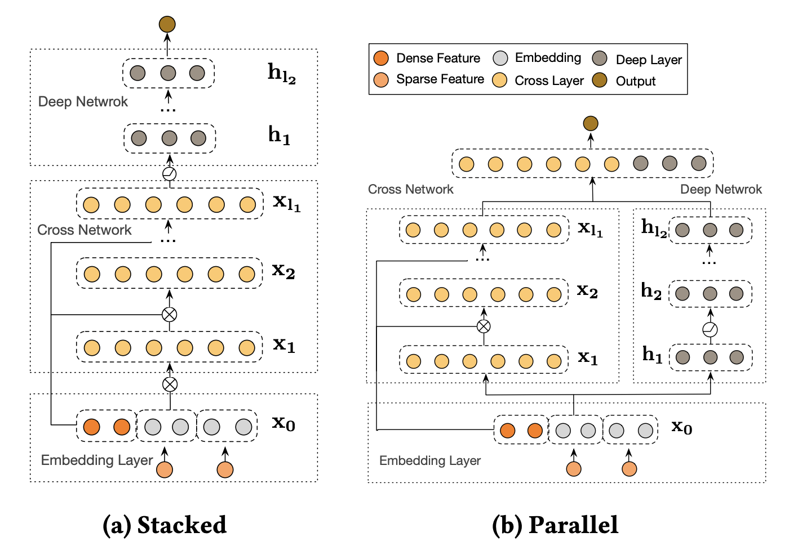
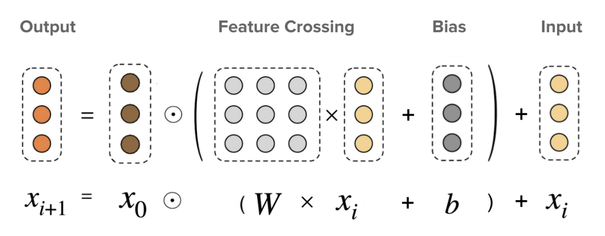
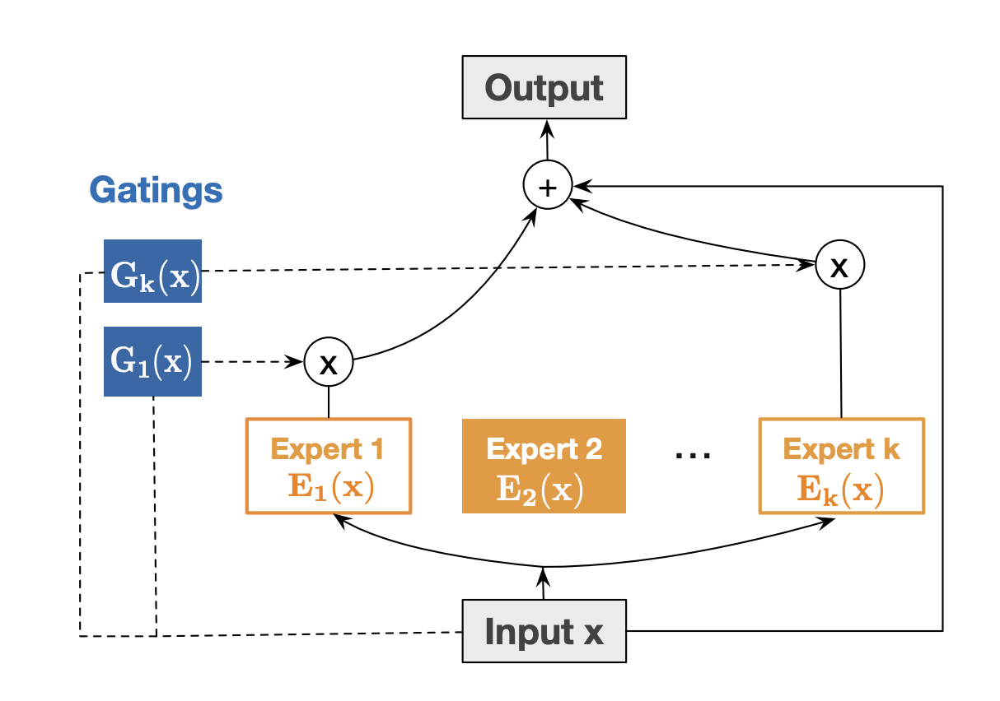
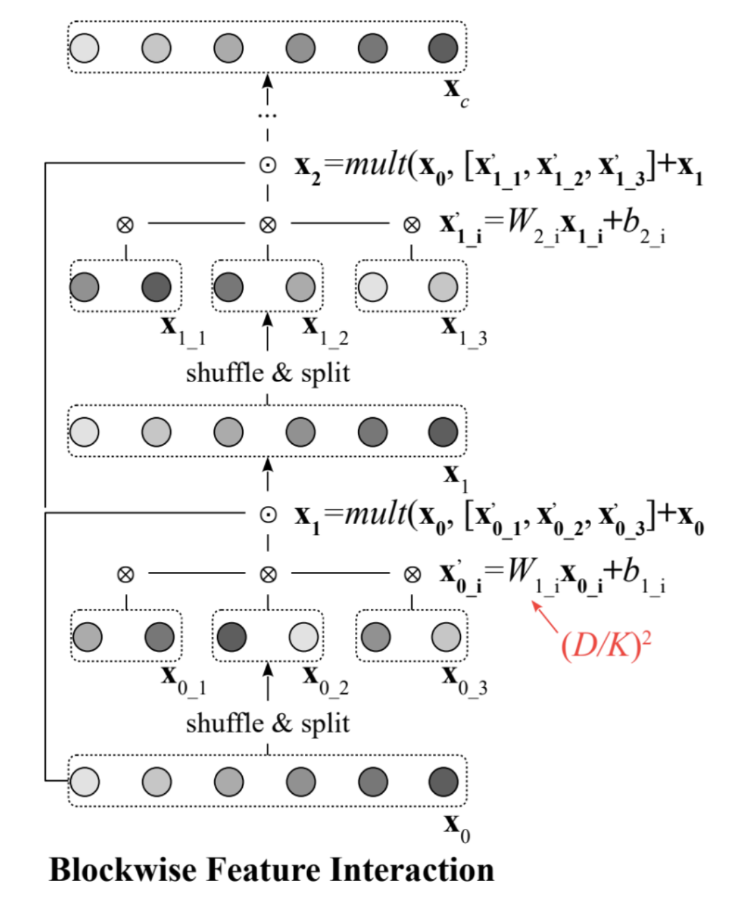
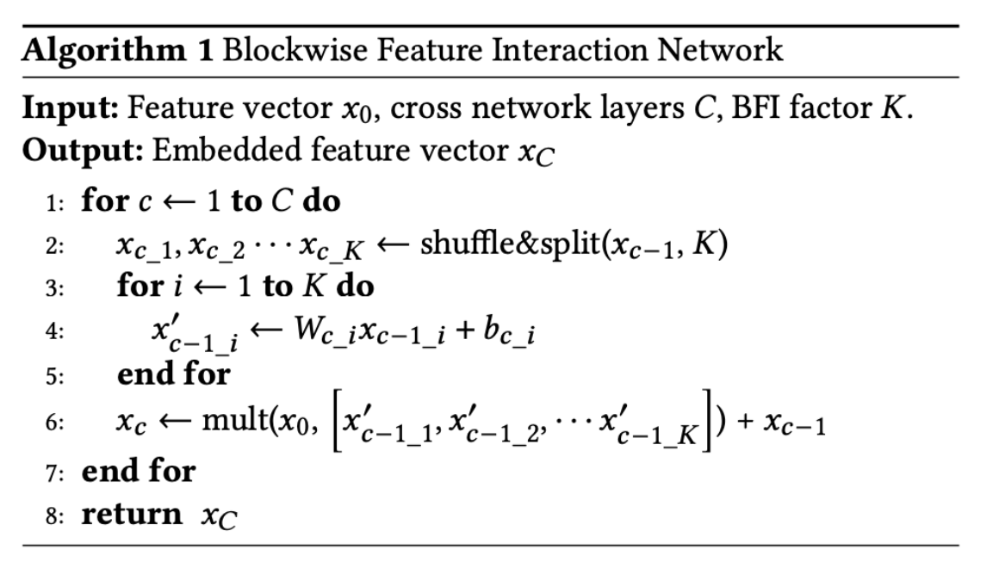

Deep and Cross Networks
Introduction
I recently encountered deep and cross networks and found myself quite fascinated by their architecture and the underlying theories. While I plan to delve into the theoretical insights of such networks in a subsequent blog post, I wanted to offer a high-level overview of a few classes of cross networks in this particular post.

The fundamental concept underlying deep and cross networks can be summarized as follows: these networks comprise two distinct towers. The first tower is dedicated to modeling implicit and higher-order interactions among features, while the second tower is designed to capture explicit, lower-order interactions among features. These towers can be employed either in a stacked configuration or in a parallel configuration (see the figure above for an example of deployment in a parallel configuration). The former is accomplished through the utilization of a multi-layer perceptron (MLP), while the latter relies on the cross networks for implementation. Depending on the specific configurations of the cross networks, we can identify six fundamental types of network structures: - Deep and Cross Network - Full-Rank Deep and Cross Network V2 - Reduced-Rank Deep and Cross Network V2 - Mixture of Experts for Full Rank Deep and Cross Network V2 - Mixture of Experts for Reduced Rank Deep and Cross Network V2 - Blockwise Feature Interaction in Deep and Cross Network V2
Deep and Cross Network (DCN-V1)
In the basic DCN model proposed in [1], the basic idea is that the cross layer performs explicit crossing of features. This is explained in the following operation:
x_{(i+1)}= <x_0, x_i> w_i + b_i + x_i
where x_0 \in \mathbb{R}^D is the input feature for the model, and <x_0, x_i> stands for the inner product of two vectors x_0 and x_i. The number of parameters per layer of the cross network is 2D. Therefore, the original DCN work is an excellent choice when latency and memory create bottlenecks during online inference.
Full-rank DCN-V2 (FR-DCN-V2)

In FR-DCN-V2 [2], we introduce a square matrix of dimension D \times D. The update equation assumes the following form: x_{(i+1)}= x_0(W_ix_i + b_i )+ x_i
The number of parameters per layer of the cross network is D(D + 2). Therefore, this model is an appropriate choice when the dimension of the input features is sufficiently small and the online inference is not constrained by memory and latency considerations.
Reduced-rank DCN-V2 (RR-DCN-V2)
In RR-DCN-V2 [2], we approximate the W_i matrix using a low-rank factorization framework. The update equation, in such a case, assumes the following form:
x_{(i+1)}= x_0(U_iV_i^T x_i + b_i ) + x_i
One can see that W_i has been replaced with U_iV_i^T. In practical applications, it is a common observation that a significant portion of the information pertaining to the matrix W_i is concentrated within the top few singular values. Consequently, there exists a long tail of small singular values. This observation substantiates the validity of a low-rank assumption. Adopting a reduced-rank implementation offers several advantages, including a reduction in the overall number of parameters, enhanced latency during online serving, and a more efficient utilization of memory resources.
If we assume that \text{rank}(U_i) = \text{rank}(V_i) = d<<D, the total number of parameters per layer of this cross network is 2D(d+ 1) which is significantly small compared to D(D + 2). Considering the memory and latency requirements of many online systems, RR-DCN-V2 is a lucrative choice where the accuracy and computation trade off can be carefully managed.
Mixture of Experts for Full-rank DCN-V2 (MoE-FR-DCN-V2)
In MoE-FR-DCN-V2, the concept of FR-DCN-V2 is extended to include multiple experts. The exact form of the update is given below: E_{ji}= x_0(W_{ji}^Tx_i + b_i) x_{(i+1)}= x_i + \sum_{j}G_{ij}E_{ji}

The G_{ij}’s are non-linear gating functions that encode the importance of each expert. Here index i is the index of the layer, and j is the index of the expert. With K such experts, the number of parameters in MoE-FR-DCN-V2 grows to KD(D+ 2). The above formulation is a slight departure from what is described in the paper though.
Mixture of Experts for Reduced-rank DCN-V2 (MoE-FR-DCN-V2)
To reduce the number of parameters of MoE-FR-DCN-V2, we introduce a low-rank factorization of the weight matrices W_{ji}’s. We further introduce a non-linear activation function g(.) to improve the expressiveness of the layers. The exact form of the update is given below:
E_{ji}= x_0(U_{ji}g(V_{ji}^Tx_i)) + b_i) x_{(i+1)}= x_i + \sum_{j}G_{ij}E_{ji}
If we assume that \text{rank}(U_{ji}) = \text{rank}(V_{ji}) = d<<D, the total number of parameters per layer of this cross network is 2KD(d+ 1) which is significantly small compared to KD(D+ 2). This value is K times higher compared to the RR-DCN-V2 model. However, in practice, with a small K, and correspondingly a small increase in the number of parameters, one may achieve significant improvement in the offline metrics.
Blockwise Feature Interaction in DCN-V2
In the blockwise feature interaction framework introduced for DCN-V2 [3], the weight matrix undergoes decomposition into several blocks, albeit in a random order. This is depicted in the following diagram, and the accompanying pseudocode of the algorithm is outlined below. The total number of parameters in such a network amounts to D(D/K + 2), where K represents the number of blocks. By setting a large value for K, one can ensure that the number of parameters remains significantly smaller than that of the FR-DCN-V2 model.
 
References
- Deep & Cross Network for Ad Click Predictions https://arxiv.org/abs/1708.05123
- DCN V2: Improved Deep & Cross Network and Practical Lessons for Web-scale Learning to Rank Systems https://arxiv.org/abs/2008.13535
- Blockwise Feature Interaction in Recommendation Systems https://arxiv.org/abs/2306.15881